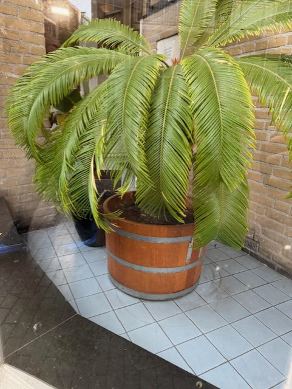

Als je geïnteresseerd bent in natuur en geschiedenis, dan is Hortus Botanicus een plek die je niet mag missen. Deze botanische tuin bestaat al sinds 1638 en is een van de oudste ter wereld. Wat ooit begon als een medicinale kruidentuin, is uitgegroeid tot een indrukwekkende collectie van zeldzame en exotische planten.

Waarom een bezoek waard?
Hortus Botanicus is niet zomaar een tuin. Hier vind je eeuwenoude bomen, tropische kassen en bijzondere planten die je nergens anders in Nederland tegenkomt. Van de reusachtige Victoria waterlelie tot de zeldzame Wollemia-pijnboom, elke plant heeft een eigen verhaal. Het is een plek waar je kunt ontspannen, leren en inspiratie opdoen.
Bezoek Hortus
Of je nu een plantenliefhebber bent of gewoon een rustige plek zoekt om even aan de stad te ontsnappen, Hortus heeft voor iedereen wat te bieden. Wandel door de kassen, ontdek het vlinderhuis of geniet van een kop koffie op het terras met uitzicht op het groen. Plan je bezoek en ervaar zelf de unieke sfeer van deze bijzondere plek.
